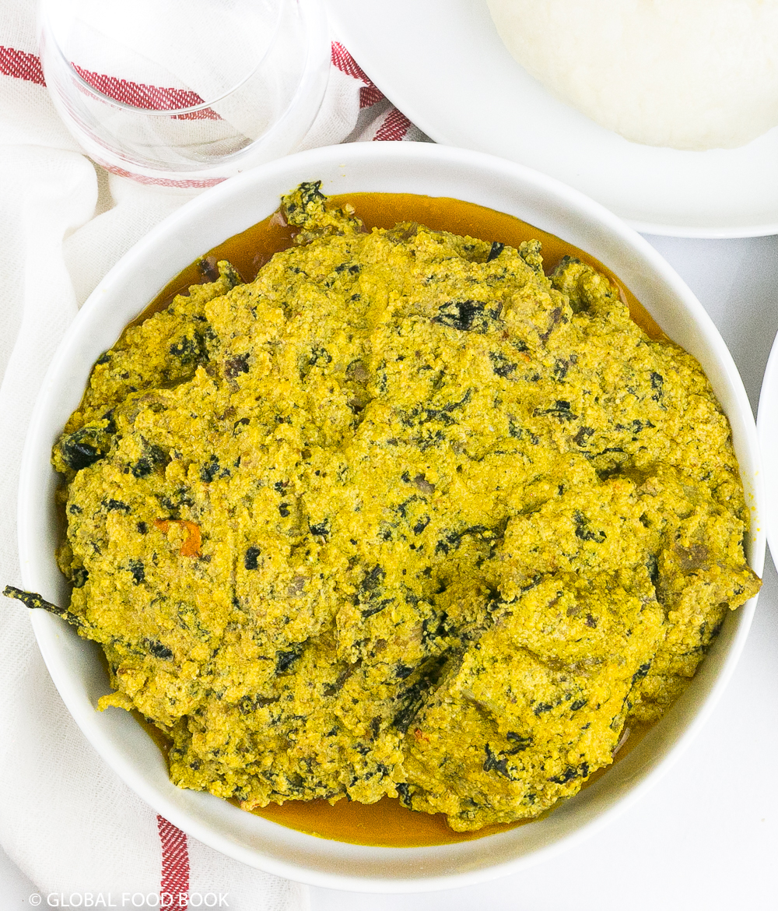

Egusi with bitter leaf soup recipe

Description
A typical egusi soup comprises of the following ingredients: egusi, meat, fish,
dried fish, stockfish, peppers, seasonings, onions,
red palm oil, water and vegetables (for eg. bitter leaves, fluted pumpkin leaves or ugu,
spinach).In the absence of the egusi seeds, pumpkin seeds can equally serve as
a great substitute for egusi.
Egusi with bitter leaf soup does not have to be difficult nor daunting to cook.
When cooking a delicious soup such as this, I recommend that you
gather the best ingredients you can lay your hands on.
Ingredients
- 2kg meat
- 1 dry fish
- 2 tsp salt
- 1 habanero pepper
- 200ml red palm oil
- 3 Knorr stock cubes
- 1 cup onions (frozen)
- 3 cups egusi (ground)
- 1½ cups stockfish fillets
- A handful of washed bitter leaves
Steps
- Treat the exterior of a clean pot then place it on top of a charcoal fire.
- Wash the meat thoroughly and add in the pot.
- Add onions, pepper, salt, two Knorr cubes and water to cover the meat level.
- Stir the meat, cover the pot and allow to cook until tender.
- While the meat is cooking, soak the dried fish and stockfish fillets in hot water then wash well.
- Slightly heat up the red palm oil and add the egusi.
- Stir and fry the egusi to form a thick paste.
- Once the meat is cooked, add the dried catfish and stockfish fillets and continue cooking for another 5 mins.
- Scoop the egusi paste into the pot of soup, add the rest of the Knorr cubes, add the washed bitter leaves then cover the pot.
- Continue cooking for another 20 minutes or until the egusi is done.
- Add a little more water for a lighter consistency if you want.
- Stir the soup, bring down the soup from fire.
- Serve the egusi with bitter leaf soup with any swallow of choice such as poundo, pounded yam, eba, fufu.